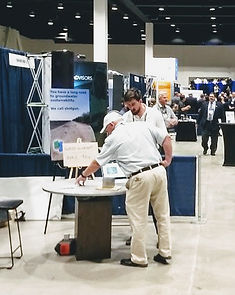

May 5th, 2022
Cubes, Cryptography and Common Pool Resources Two weeks ago Basin Logix was at the Association of California Water Agencies (ACWA) 2022 Spring conference in the imposing Sacramento conference center. This was our first time at ACWA and lucky for us we secured a booth right in front of the exhibitor hall entrance. Around us were the standard fare of conference exhibitor swag up for grabs: bowls of candy, business card raffles to win gadgets, company stationary, and even the crowd-pleasing mini putting green.
At the Basin Logix booth we had something unique that helped us keep up with the Joneses and tell our story: A very heavy, very dense, tungsten cube.
Although every element on the periodic table is unique, among the metals tungsten is special. The thing about tungsten that is immediately noticeable is how extraordinarily heavy it is. Tungsten has a density of 19.25 gm/cm3, which puts it right next to gold and uranium in terms of density. It is almost 2 times denser than lead. At our ACWA booth we had a tungsten cube that we used to play a guessing game with. For context, the cube was similar in size to a softball, but with the total weight of large border collie. The premise of our tungsten cube game was simple:
You could move, pick up, handle the cube (in a safe manner). You then guessed the weight of the cube to the pound. If your guess was an exact match to the actual weight of the cube, you won a gift card. If your guess was not an exact match, you got to try again the next day.

Simple enough right?
We had an extra twist to the game that kept people up at night, kept them coming back for more guesses and helped tell our story:
If you didn’t guess correctly we wouldn’t tell you the weight of the cube.
We wanted to share with people how using cryptographic principles it is possible to have trust in a process without actually having all of the information immediately at hand. We showed contestants that two people, each of which have incomplete information can never the less be able to agree on something important. Crucially, we wanted to tie that to groundwater accounting and compliance under the Sustainable Groundwater Management Act (SGMA).
Here is how it worked:
-
We put the weight of the cube in pounds (rounded to the nearest pound) into an online SHA-1 (Secure Hash Algorithm 1) calculator. The output of the calculator produced a unique 40 digit hexadecimal number.
-
We took the first four characters of the 40 digit output and wrote them on a poster board visible to the contestant. (Examining only the first four characters of the output were sufficient for our game.)
-
The contestant would input their guess into the same SHA-1 calculator producing another unique 40 digit hexadecimal number.
-
If the first four characters of the SHA-1 output of the contestant’s guess matched the first four characters of the SHA-1 output of the correct weight (printed on the poster board) then they won the gift card.
-
Importantly, if the contestant did not guess correctly, they would have no way of using the comparison between their four characters and correct four characters on the poster board as an indication of if their guess was higher, lower, close or far away from the correct weight.
We had several winners guess correctly using a variety of different tactics/methods, ranging from impressive mental chemistry/math to equally impressive guesstimation. The takeaway from the game was that we didn’t have to see the contestant’s guess in order to verify that it did not match the correct weight!
In a very similar way, the Basin Logix platform uses cryptographic principles and account management schemes to bring verifiable compliance to groundwater users while respecting their privacy.
If a regulatory agency’s task is to verify that a basin is en-route to sustainability they have a whole host of different data types with which to make a determination. If a basin’s sustainable yield is allocated (capped and distributed) by a Groundwater Sustainability Agency (GSA), one might expect that the GSA would want to know how those allocations are being managed and used by the stakeholders they regulate. The rub is that historically and presently, these stakeholders consider their water usage to be very private. It will then come as no surprise that stakeholders will resist regulation that not only diminishes their access to water resources, but also removes an important layer of privacy. This is the situation in which SGMA implementation finds itself today.
The Basin Logix platform provides a platform to make SGMA implementation easier. We want basins to achieve regulatory compliance and sustainability and we want to provide the smoothest path to accomplishing that. Simply put, a user doesn’t need to explicitly share with their GSA how they are managing their water, so long as they are in compliance. All they need to do is show compliance with decisions and rules stemming from the GSA’s Groundwater Sustainability Plan (GSP). If everyone in the basin is in compliance, then the basin is in compliance and the sub-basin is on its way to achieving sustainability.
Similar to when a contestant would guess the correct weight of the tungsten cube in our game, explicit sharing of water useage/management data would occur when a particular threshold/match is met. For example in thinking of a groundwater allocation account like a bank account, once the account is overdrawn, an audit could be triggered, potentially resulting in an infraction or identification of non-compliant behavior.
The tools being built on the Basin Logix platform carry an underlying fundamental characteristic of trust. In an effort to solidify the importance of trust in SGMA implementation we will be examining the role of trust as participants in Indiana University’s Ostrom Workshop Summer Academy.
We will be identifying and analyzing trust as a variable in California’s groundwater common pool resources (CPRs) via the Institutional Analysis and Development (IAD) framework. Isolation, inspection and determination of the impact of trust is needed. Relationships involving trust will be identified and quantified. How these relationships impact a GSA’s ability to meet regulatory time-lines/goals, increase stakeholder agency and reduce environmental fragility will influence the creation of success metrics. Following “trust” from low level variable through to high level outcomes should provide us insight into how efforts to increase trust can change outcomes. Findings will influence the on-going development of the Basin Logix distributed groundwater accounting and management platform.
We are also continuing our guessing game at the upcoming Groundwater Resources Association’s Fifth Annual SGA Summit and Groundwater Law & Legislation Forum this coming June in Sacramento. Stop by our booth and trust that you’ll walk away entertained and educated!